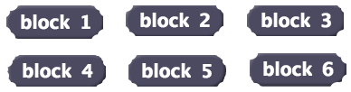
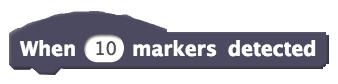
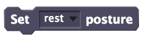
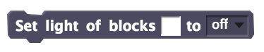
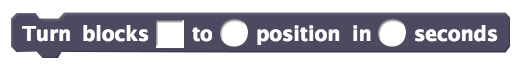
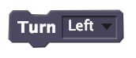
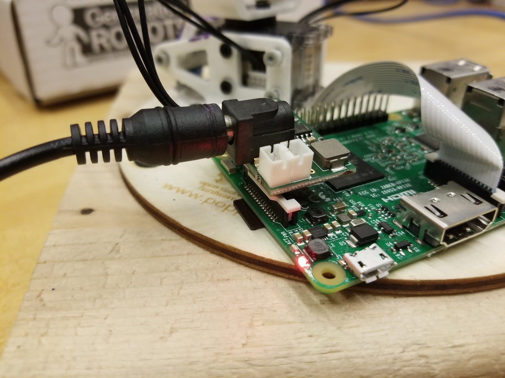

This simple example shows how to make the robot draw.
Makes the poppy perform actions based on the markers it sees. You can generate markers using this python server.
Makes the poppy identify the number you show it.
Connects to the robot at the given IP Address. |
|
|  | Reports the position of the blocks. |
Gets the base64 encoded image from the robots camera. | |
Robot starts/stops dancing. |
|
Get the markers from the markers list using index. Index starts from 1. |
|
|  | Executes the stacked blocks when x number of markers are detected |
Reports the length of detected markers. |
|
Contains a list of detected markers. |
|
Captures an image using the robot's camera and tries to identify the number that was drawn. |
|
Plays the specified recording. |
|
|  | Sets the posture of the robot to the given posture. |
Starts recording the movement of the given motors. The recording will be stored on the robot with the given name. |
|
|  | Set the lights of the given motors to the given color. |
Stop recording the movement. The name must be the same as the name mentioned in the start recording block. |
|
Activates or deactivates the marker tracking feature of the robot |
|
|  | Turns the specified motors to the given position in given amount of time. |
|  | Turns the robot either to the left, right, forward, or backward. |
If your robot isn't assembled yet, follow this guide.
Remove the microSD card from the Raspberry PI (green board).
Download the poppy image file from this link.
Insert the SD card into your computer.
Download Etcher.
Start Etcher, select the SD card drive, select the poppy image (poppy.img.zip).
Click burn.
Put the microSD card back in the Raspberry Pi.
Create a hotspot on your phone with the SSID as poppy and password as poppyergo.
Connect the powercord into the Raspberry pi.
Wait for the poppy to connect to your hotspot.
If you have an Android phone, install Hotspot Manager too see the IP Address of the robot.
Open the Hotspot Manager and go to the Client tab and locate the robot. Note the IP address of the robot.
Click on any of the examples on the top and replace the IP address in the call block with the new IP address you just noted. The format of the IP address should be http://a.b.c.d:6969/ where a, b, c and d are numbers between 0 - 255.
Click the flag to run the example.